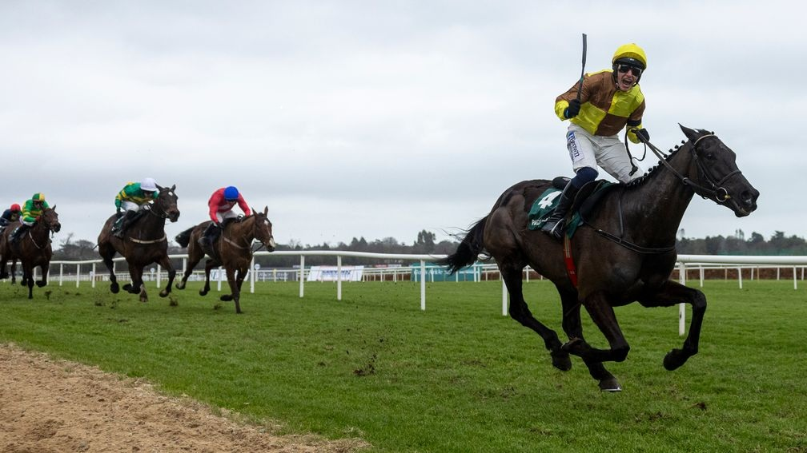

Main Edition · Friday 28 August 2026 · Ffos Las · Sandown · Thirsk · Goodwood
MORNING UPDATE · BET365 PRICES VIA THE ODDSCHECKER URL METHOD · NON-RUNNERS MARKED
THE FIGURES HAVE SPOKEN.
A 7/1 Top Tip, three proper value plays — and a few gems tucked away for the avid reader
Today's selections were ranked before price entered the equation. Recent same-surface speed figures remain the heart of the method, with the market used afterwards to decide where the value really lies.
🏆 Top 3 Tips
PUBLISHED PRICE = BET365 · checked through the live Oddschecker comparison grid
Top Tip
Bella Bisbee
2.35 Ffos Las 7/1
Recent SF80 and SF71 figures put her right at the heart of this race and she arrives from a workable mark. Dappled Light coming out only strengthens the shape.
The repeatability is the attraction: SF79 and SF78 rather than one isolated spike. South Shore is a serious danger, but the price lets us stay loyal to the figures.
Stage 1 #1 · repeat speed · strong winner profile
No. 3
Kimeko Glory
7.28 Goodwood 9/4
A 12-length winner seven days ago and still 6lb well in under a 5lb penalty. The market has spotted it, but for pure winner-finding this is too strong a handicap angle to ignore.
12L last-time win · +6 ahead of handicapper
💎 The Value Desk
THE MARKET DISAGREES WITH OUR FIGURES · that's where the fun starts
Headline Value
Jordan Electrics
4.00 Thirsk 16/1
SF85, SF82 and SF80 is the strongest body of recent speed evidence among today's value horses. Ranked #1 before prices, yet Bet365 still gives us 16/1.
Stage 1 #1 · SF85/82/80 · 4 places at 1/5
Value No. 2
Lady Milton
5.10 Goodwood 9/1
Three competitive recent turf efforts, a workable OR73 and our independent #1. Draw 13 is the obvious concern, but four places make the price attractive.
Stage 1 #1 · solid recent turf form · 4 places at 1/5
Value No. 3
Alpha Capture
4.38 Thirsk 12/1
SF80 only 17 days ago when beaten just three-quarters of a length. The Class 2 rise asks a question, but 12/1 compensates us far better than last night's price did.
Stage 1 #1 · SF80 · 4 places at 1/5
🏇 From the Editor's Desk
GALOPIN DES CHAMPS — A CHAMPION SIGNS OFF
Two Cheltenham Gold Cups, a place among the modern greats — and a career worth celebrating.

Galopin Des Champs and Paul Townend win the Paddy Power Irish Gold Cup in 2025
Racing said goodbye to one of its biggest names with the retirement of Galopin Des Champs, the Willie Mullins-trained star whose career was defined by two Cheltenham Gold Cup victories and a string of top-level performances.
At his best he combined class, stamina and that sense of inevitability the really good staying chasers seem to carry with them. Plenty win major races; rather fewer make the biggest races feel like their natural stage.
For Paul Townend and the Mullins team he was a horse for the great days, and for racing fans he became one of the defining chasers of his generation.
The game moves on quickly. The very best horses make sure we remember to look back.
⭐ Top 3 in Every Race
⭐⭐⭐ = strong confidence · ⭐⭐ = good confidence · ⭐ = caution/competitive. Stars show confidence in the ranking, not betting value. The original Stage 1 ordering is preserved. Known non-runners are marked NR rather than retrospectively reranked.
Ffos Las
2.00
Little Jaybee · Forever Glamorous · Son Of Astar
⭐⭐
2.35
Bella Bisbee · Dappled Light NR · Lerwick
⭐⭐⭐
3.10
Sydney Rock · Esplanade · Withtearsinmyeyes
⭐
3.45
King Of The Dance · Dinah Myte · Alices Influence
⭐⭐
4.20
Ivat Ghia · Katalyst · Sunshine And Roses
⭐⭐
4.55
RobustoNR · Raintown · Kings Castle
⭐⭐⭐
Sandown
2.25
Sky Secret · True Charm · Innichen
⭐⭐
3.00
Level Up · South Shore · So Smart
⭐⭐⭐
3.35
Thunder Home · Cilician · New Oxford NR
⭐
4.10
Home Hero · Drymee · Thursday Girl
⭐⭐
4.45
Dandy Khan · Box Clever · Post Rider
⭐⭐
5.20
Golden Circet · Galyx NR · Magnatura
⭐⭐
Thirsk
2.13
Tees George · Harswell River · Misemerald
⭐⭐
2.48
League Of Justice · Wootz · Eagles Instinct
⭐
3.25
Mr Minz · Quintillion · Astral Crown
⭐
4.00
Jordan Electrics · Lord Roxby · Veblen Good
⭐⭐⭐
4.38
Alpha Capture · Brighton Boy · Northern Express
⭐⭐⭐
5.13
Talismans Time · Sudu · Arrange
⭐⭐
Goodwood
4.35
Cut And Sew · Wig Wam Bam · Motown Filly
⭐
5.10
Lady Milton · Oasis Sunrise · Brighton Beach
⭐⭐⭐
5.45
Ammoony · Liveinthelight · Kissmehoneyhoney
⭐⭐⭐
6.20
Rubys Profit · Kiss And Run · Brave Nation
⭐⭐⭐
6.55
Northcliff · Newsreader NR · Ararat
⭐⭐⭐
7.28
Gone Rogue · Beach Point · Kimeko Glory
⭐⭐⭐
🩺 Yesterday's Cheerful Autopsy
SOME VERY LARGE HORSES WERE HIDING IN THERE
The strike rate tells one story. The prices tell an even better one.
Thursday's frozen Top 3 found the winner in 18 of 34 races, with six outright No.1 winners. But the eye-catchers were the prices: Royal Duke won at 12/1, Miss Australie won at 16/1, and both were ranked No.1.
Then came the hidden treasure. At Ffos Las our three supplied the entire 1-2-3 in the 3.07, with Channel Islands second at 40/1. Later at Southwell, Secano finished second at 50/1 from our #3 spot while our #2 Market Leader won the race.
NO.1 WINNERS6 / 34
WINNER IN TOP 318 / 34
TOP-3 HIT RATE52.9%
🎯 BIG-PRICE RADAR 🏆 Miss Australie — 16/1 WINNER (#1) 🏆 Royal Duke — 12/1 WINNER (#1) 🎯 Secano — 50/1 SECOND (#3) 🎯 Channel Islands — 40/1 SECOND (#3) 🎯 Lucys Promise — 16/1 THIRD (#2)
Apparently nobody told the outsiders what price they were.